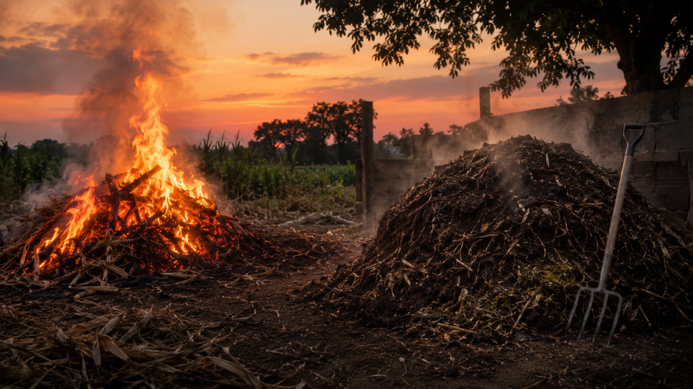

Somewhere on your farm right now, money is either burning in a pile of smoke or quietly turning into next season’s fertiliser. The choice is entirely yours.

Every evening on farms across Nigeria, someone sets fire to a heap of crop husks and dry stalks because it is easier than dealing with them any other way. The smoke rises, the air thickens, and a genuinely valuable resource turns into pollution in about twenty minutes. Meanwhile, the cattle manure piling up behind the kraal sits untouched, and the synthetic fertiliser bill for next season keeps climbing.
Nobody planned for this to be wasteful. It simply became the default because nobody showed farmers what the alternative actually looks like in practice. The alternative is a closed loop, where what the animals leave behind feeds what grows next, and what grows next feeds the animals again. The farm becomes its own supplier.
Reality Check
Cattle manure that most smallholder farms currently leave unused provides much of what a synthetic fertiliser bag is bought to replace. One sits in a pile behind the kraal. The other is paid for at the agro shop every season.
The Recipe Is Simpler Than It Sounds
Good compost is a balanced diet for soil, and like any diet, it needs the right ratio of ingredients. Cattle manure is nitrogen-rich, the protein of the pile. Dry crop residues like husks, stalks, and straw are carbon-rich, the carbohydrate. Layer them roughly two parts carbon to one part nitrogen, keep the pile moist but not soaked, and turn it every two weeks to let oxygen in. That is the entire recipe. Nature does the rest.
Patience Is the Only Ingredient Money Cannot Buy
Fresh manure applied directly to crops can burn young roots with excess ammonia, doing more damage than the fertiliser it was meant to replace. Aging solves this. Left to compost for six to eight weeks, the ammonia stabilises into a form plants can use without injury. The pile that looked like waste in week one looks like dark, crumbling, sweet-smelling soil amendment by week eight. The only real cost in the entire system is the labour of turning that pile every fortnight and the patience to let eight weeks pass before it goes back into the field.
Reality Check
The closed loop does not need new infrastructure, imported technology, or upfront capital. It needs a corner of the farm, eight weeks of patience, and a decision to stop burning what the soil has been asking for all along.
The smoke from that evening fire never made anyone richer. The compost pile quietly working in the corner of the yard will. One is gone in twenty minutes. The other comes back every season.